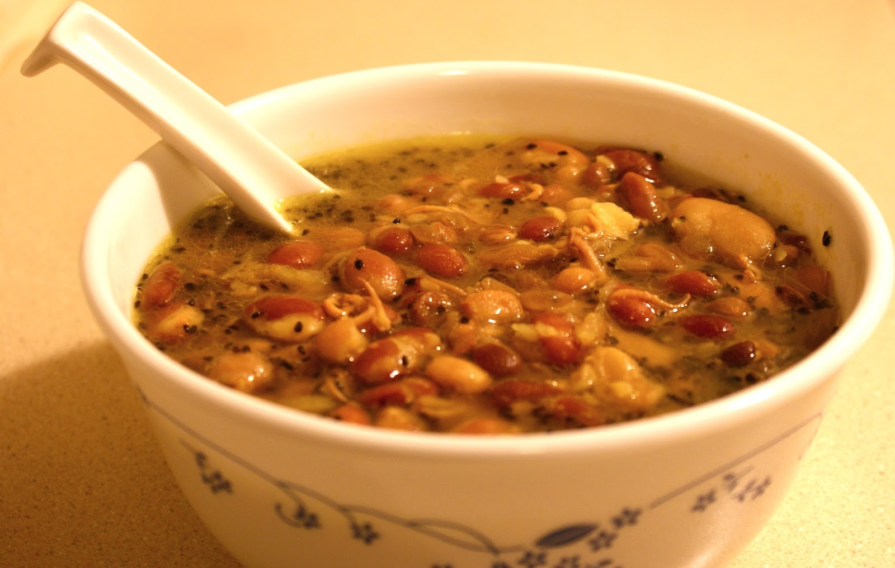

KWATI-RECIPE

INGREDIENTS
- Mixed beans (black-eyed peas, kidney beans, chickpeas, black beans, green gram, lentils, etc.): 1 cup (soaked overnight)
- Chopped onion: 1 medium-sized
- Chopped garlic: 3 cloves
- Chopped ginger: 1 tablespoon
- Cumin seeds: 1 teaspoon
- Turmeric powder: 1 teaspoon
- Garam masala powder: 1 teaspoon
- Chopped tomatoes: 2 medium-sized
- Vegetable or chicken broth: 6 cups
- Butter or oil: 2 tablespoons
- Salt to taste
Method
- Rinse the soaked mixed beans thoroughly and set them aside.
- In a pot, heat butter/oil. Add cumin seeds and let them splutter.
- Add chopped onion, garlic, and ginger. Sauté until onions are translucent.
- Stir in turmeric powder and garam masala powder.
- Add chopped tomatoes and cook until they soften.
- Add the mixed beans and vegetable or chicken broth. Bring it to a boil.
- Once boiling, reduce the heat and simmer until the beans are tender.
- Mash a portion of the beans to thicken the broth slightly.
- Season with salt according to taste.
- Serve hot Kwati soup with rice or as a standalone dish.
Kwati is Ready!!!